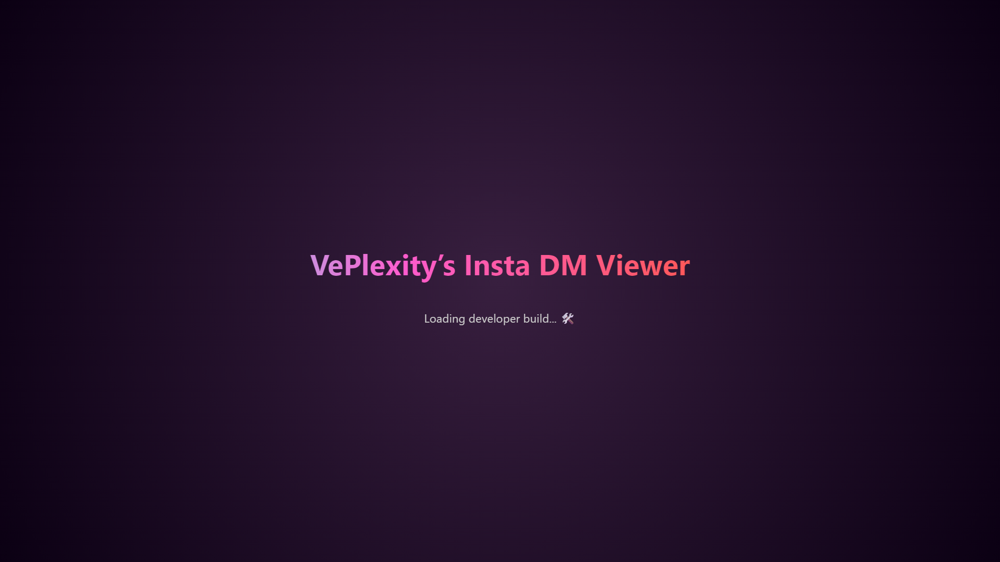
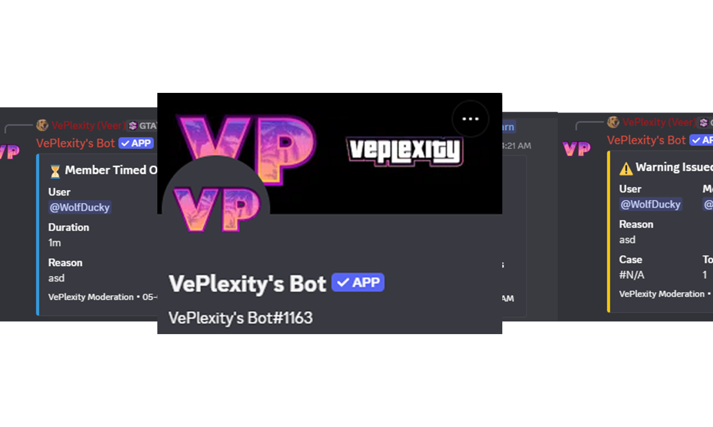

Developer • Creator • System Builder
I'm a developer and creative technologist focused on building interactive systems, tools, and digital experiences. My work spans web development, game modding, system-level experimentation, and content creation.
I enjoy understanding how things work under the hood from debugging game engines and building custom tools, to designing user interfaces and optimizing performance. My approach combines technical problem-solving with creative thinking.
Alongside development, I actively create content, produce music, and explore new technologies to expand my skillset and push boundaries.
Building systems, creating experiences, and constantly evolving.
REVA University • 2023 – 2026
Developing business, marketing, and analytical skills alongside technical and creative projects.
I actively integrate AI tools such as ChatGPT and other advanced models into my development workflow to accelerate problem-solving, ideation, and system design.
From building applications and debugging complex systems to generating creative assets and improving efficiency, I use AI as a powerful tool to enhance productivity and innovation.
My focus remains on understanding the logic behind every solution, ensuring that AI complements my skills rather than replaces them.
I build web applications, tools, and systems with a focus on performance, usability, and clean design. My work includes custom utilities, interactive interfaces, and real-world problem solving.
I create and produce music, exploring various genres and production techniques to craft unique soundscapes and compositions.
I create gaming and tech content, focusing on storytelling, performance optimization, and behind-the-scenes insights.
I work on troubleshooting, diagnostics, and system-level experimentation, including networking, servers, and performance tuning.
I create content around gaming, technology, and creative workflows. From GTA-related projects to system insights and development processes, my goal is to explore and share how things work behind the scenes. Alongside content creation, I also produce music and experiment with different forms of digital creativity.
Visit Channel →❤️ 244 Subscribers • Gaming & Tech Content
0 Subscribers
Updated recently

Advanced offline Instagram chat viewer with JSON parsing, search navigation, emoji rendering, and UI replication.
Open Project →
Custom moderation and music bot with voice playback, automation features, and real-time server interaction.
View Details →My projects focus on building real-world tools, exploring system-level functionality, and enhancing user experiences through creative and technical solutions. I often combine development, debugging, and experimentation to create unique systems.
Custom moderation and music bot with voice playback and server automation features.
Cross-platform screen sharing system for Android → Windows via USB and WiFi.
Concept system to stream mobile screen to OBS with low latency.
Real-world system diagnostics, optimization, and repair solutions.
Live debugging system with wireframes, coordinates, and rendering tools.
Custom developer interface for inspecting models, controls, and debug data.
Enhanced GTA 3, Vice City & San Andreas textures using AI models integrated into vanilla gameplay.
Recreated cinematic intro experience using web + editing + audio tools.
Real-time chat overlay system for live streaming (in development).
Self-hosted system for storage, services, and experimentation.
Hosted and managed multiplayer server using custom configs and performance tuning.
Test environments for system monitoring, failure analysis, and performance testing.
HTML • CSS • JavaScript • Flutter • System Troubleshooting • Video Editing • Game Modding • UI/UX Design • OBS Setup • Audio Production
Freelance Tech Consultant & Video Editor Provided system troubleshooting, performance optimization, and creative content solutions for individuals and businesses.
Managed operations across multiple family businesses, gaining hands-on experience in problem-solving, customer interaction, and workflow management.
I’m driven by curiosity whether it’s understanding how a game engine works, optimizing a system, or building something from scratch. I enjoy solving problems that require both technical depth and creative thinking.
I produce and mix music using FL Studio, focusing on instrumental composition, sound design, and vocal processing. My work combines technical precision with creative expression.
Tools: FL Studio • Audio Mixing • Sound Design • Mastering
FL Studio is a powerful digital audio workstation (DAW) used for music production, mixing, and sound design. It allows me to create, edit, and refine audio with precision and flexibility.
Email: veermadan.work@gmail.com
Open to collaborations, freelance work, and creative projects.
Currently in my final semester of a BBA in Marketing at REVA University, I’m actively building and refining technical and creative projects.
I’m working on enhancing my Discord bot with new features, developing my personal portfolio (this website), and preparing to launch VePlexity.dev as a dedicated platform for my content and projects.
I am also seeking opportunities where I can apply my skills in technology, marketing, or business development, and contribute to real-world projects while continuing to grow.
Open to internships, placements, and collaborative opportunities.
Whether it’s development, content creation, or technical problem-solving, I’m always open to working on exciting ideas and projects.
Interested in roles across Tech, Marketing, and Business Development.